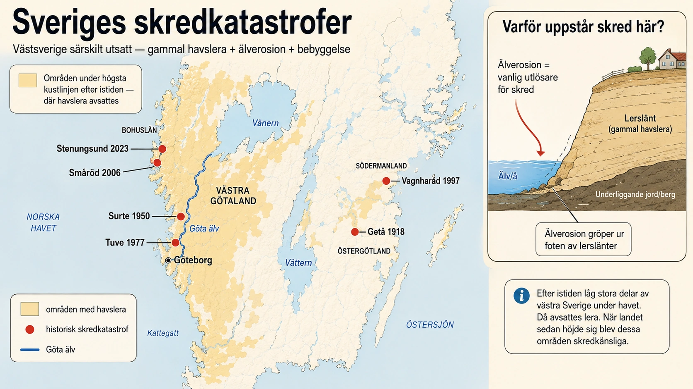

Sverige — ett land där marken kan glida
Sverige har inte lika många stora jordskred som vissa bergiga länder. Men när stora skred sker här kan konsekvenserna bli mycket allvarliga. Orsaken är att många svenska skred sker i lera, särskilt i områden som tidigare låg under havet efter den senaste istiden. Där finns ibland kvicklera — en lera som kan verka stabil men som vid störning kan förlora mycket av sin hållfasthet och nästan bli flytande.
Den geologiska bakgrunden vi mötte i avsnittet om sluttningsprocesser — om hur kvicklera bildas — har en direkt och tragisk konsekvens i svensk historia. Den här djupdykningen handlar om sex katastrofer som tillsammans visar hur lera, vatten, erosion och mänskligt byggande kan mötas på ett sätt som blir förödande.
Varför är Västsverige särskilt utsatt?
Många av Sveriges mest kända jordskred har inträffat i Västra Götaland, särskilt längs Göta älv och i lerområden nära Bohuslän. Det beror på flera saker som samverkar.

För det första finns där tjocka lager av gammal havslera. Efter istiden låg stora delar av västra Sverige under havsytan. När landet höjde sig genom landhöjningen hamnade de gamla lerbottnarna på land. I dessa leror kan det finnas svaga lager och ibland kvicklera.
För det andra skär älvar, bäckar och raviner ner genom leran. När vatten eroderar vid foten av en slänt försvinner stödet längst ner. Då kan hela sluttningen ovanför börja glida. Göta älvdalen är historiskt särskilt utsatt för skred just av den anledningen.
För det tredje bygger människan ofta just i dessa dalgångar — vägar, järnvägar, industrier, bostäder och hamnar. Det gör att ett skred inte bara förändrar naturen, utan också kan slå ut viktiga samhällsfunktioner. Geografin och historien har skapat en farlig kombination: just där marken är som mest känslig har människor valt att bygga som mest.
Getå 1918 — Sveriges dödligaste järnvägskatastrof kopplad till skred
Ett av de mest tragiska skreden i svensk historia inträffade vid Getå utanför Norrköping den 1 oktober 1918. Ett skred drog med sig delar av järnvägsbanken vid Bråvikens norra strand. När ett tåg kom körde det in i det skadade området och olyckan blev katastrofal.
Minst 41 personer omkom, vilket gör händelsen till en av Sveriges värsta järnvägsolyckor. Skredet omfattade både järnvägen och landsvägen i sluttningen vid Bråviken.
Det viktiga med Getå är att förstå att jordskred inte alltid måste begrava hela samhällen för att bli katastrofala. Om ett skred träffar en kritisk plats — en järnväg, en bro eller en motorväg — kan följderna bli mycket stora. Naturprocessen blir då en samhällskatastrof. Getå visar också att skredrisk inte är begränsad till västsverige; den finns där förutsättningarna finns.
Surteskredet 1950 — när marken gled mot Göta älv
Den 29 september 1950 inträffade Surteskredet på östra sidan av Göta älv, i dagens Ale kommun. Skredet var ungefär 600 meter långt och 400 meter brett. En person omkom och 31 bostadshus förstördes.
Surteskredet visar tydligt hur farliga lerområden nära älvar kan vara. Göta älv har under lång tid eroderat i sina stränder. När nederdelen av en slänt försvagas kan marken ovanför till slut tappa balansen. Då räcker det ibland med en utlösande faktor — hög vattenhalt, vibrationer eller belastning — för att skredet ska starta.
Surte är ett bra exempel på en återkommande svensk ekvation:
gammal havslera + älverosion + bebyggelse = hög skredrisk
Det var inte bara naturen som påverkades. Hus förstördes, människor förlorade sina hem, och samhället behövde förstå att marken längs Göta älv krävde mycket större försiktighet än man tidigare trott.
Tuveskredet 1977 — när ett bostadsområde drogs sönder
Ett av Sveriges mest kända moderna jordskred är Tuveskredet i Göteborg. Det inträffade den 30 november 1977. Det började med en spricka i Tuve Kyrkväg, och sedan gled ett stort område ner mot Kvillebäckens dalgång. Skredområdet var delvis bebyggt. Nio personer omkom och 65 bostäder förstördes.
Tuveskredet blev en vändpunkt i svensk syn på skredrisker. Efter katastrofen började man arbeta mer systematiskt med att kartlägga riskområden i bebyggda delar av landet. Skredet ledde till en riksomfattande kartering av skredrisker inom bebyggda områden — något som idag är en självklar del av kommunal planering, men som då var en delvis ny tanke.
Det viktiga med Tuve är att det visar hur ett skred kan påverka ett helt bostadsområde. Det handlar inte bara om att mark flyttar sig. Vägar bryts sönder, husgrunder slits isär, ledningar går av, och människor kan inte längre bo kvar. Ett jordskred är därför både en geologisk händelse och en social katastrof.
Vagnhärad 1997 — när villaområden hotades
I maj 1997 drabbades Vagnhärad i Södermanland av ett stort jordskred. Det skedde i ett område med lera nära Trosaån. Flera villor förstördes eller skadades, och människor fick evakueras. Händelsen blev viktig eftersom den visade att skredrisk inte bara är ett problem i Västsverige. Även östra Sverige har områden med känsliga leror.
Vagnhärad används ofta som exempel på hur bebyggelse nära vattendrag kan vara sårbar. En å eller älv kan långsamt erodera i kanten av en slänt. Under lång tid märks kanske inte mycket. Men när stabiliteten blivit tillräckligt låg kan marken plötsligt ge efter.
Det är en viktig princip att förstå: ett skred kan se plötsligt ut, men orsakerna kan ha byggts upp under lång tid. Att marken känns stabil idag är inte garanti för att den är det. Geotekniska undersökningar mäter inte bara nuläget utan också hur sluttningen kommer att utvecklas över tid.
Småröd 2006 — när väg och järnväg slogs ut
Den 20 december 2006 inträffade ett stort skred vid Småröd, söder om Munkedal i Bohuslän. Skredet drabbade både väg- och järnvägstrafik och fick förödande konsekvenser för trafiken i Bohuslän under flera månader.
Marken i skredets bakkant sjönk kraftigt — på vissa ställen upp till omkring 7,5 meter. Flera fordon fanns i området när skredet inträffade, och människor fick föras till sjukhus, men skadorna blev lyckligtvis inte så allvarliga som de kunde ha blivit.
Småröd är ett tydligt exempel på att jordskred kan slå mot infrastruktur. När en viktig väg eller järnväg förstörs påverkas inte bara de som råkar vara på plats. Transporter, pendling, handel, räddningstjänst och hela regionens kommunikationer kan slås ut under lång tid. Ett enda skred kan därför kosta samhället miljardbelopp i förlorad produktivitet och nödvändiga reparationer — utöver kostnaden i mänskligt lidande.
Stenungsund 2023 — när E6 flyttades av lermassor
Ett av de mest uppmärksammade moderna skreden inträffade vid E6 utanför Stenungsund natten till den 23 september 2023. Skredet drabbade ett område på ungefär 600 × 400 meter och orsakade omfattande skador på infrastruktur, egendom och miljö. Tre personer skadades, men ingen allvarligt.
Det här skredet är särskilt viktigt i undervisningen eftersom det visar hur mänsklig påverkan kan samverka med känsliga markförhållanden. Statens haverikommission slog i sin slutrapport fast att den direkta orsaken var överbelastning av marken genom fyllnadsmassor, i kombination med bristande hänsyn till markförhållandena.
Stenungsund visar tre viktiga saker.
För det första måste man förstå marken innan man bygger eller lägger upp massor. Lera kan bära en viss belastning, men om trycket blir för stort kan hela slänten kollapsa. Geoteknik handlar inte bara om hur marken är idag, utan om hur den reagerar på den belastning man tänker lägga på den.
För det andra kan nederbörd bidra genom att marken blir tyngre och portrycket i leran förändras. Fyllnadsmassorna var den direkta orsaken till Stenungsund, men nederbörden sannolikt bidrog till tidpunkten för skredet. Naturkrafter och mänskliga ingrepp kombinerades.
För det tredje visar händelsen hur sårbart ett modernt samhälle är. När E6 skadades påverkades en av Sveriges viktigaste vägförbindelser på västkusten. Skredet blev därför inte bara en lokal olycka, utan en regional infrastrukturchock som påverkade godstrafik, pendling och räddningstjänst i hela Bohuslän under lång tid.
Varför blir vissa jordskred katastrofer?
Alla jordskred blir inte katastrofer. Ett skred långt ute i obebyggd mark kan främst påverka landskapet och nästan inte uppmärksammas. Men ett skred blir en katastrof när det träffar människor, bostäder eller viktiga samhällsfunktioner.
Det finns särskilt fyra faktorer som avgör hur allvarlig händelsen blir.
- Var skredet sker. Ett skred nära bostäder, vägar, järnvägar eller industrier får större konsekvenser än ett skred i obebyggd mark.
- Hur snabbt skredet sker. Snabba skred ger människor mycket lite tid att fly. Kvicklereskred kan vara särskilt farliga eftersom leran kan förlora hållfasthet på sekunder.
- Hur stort området är. Ju större markområde som glider, desto fler byggnader, vägar och ledningar kan förstöras.
- Om samhället har upptäckt risken i tid. Geotekniska undersökningar, riskkartor, mätningar och försiktig planering kan minska risken. Men om markförhållandena underskattas — eller om man lägger upp fyllnadsmassor utan att tänka — kan konsekvenserna bli mycket stora.
Den fjärde punkten är särskilt viktig att fundera över. De fem moderna katastroferna — Surte, Tuve, Vagnhärad, Småröd och Stenungsund — har alla lett till nya kunskaper och bättre system. Men varje gång har den nya kunskapen kommit till priset av människors liv eller hem. Skredkatastrofer är därför inte bara geologi — de är också en historia om vad samhället lärt sig, ofta för sent.
Den viktigaste lärdomen
Sveriges jordskredskatastrofer visar att skred inte bara handlar om "jord som glider". De handlar om samspelet mellan istidens avlagringar, landhöjning, lera, vatten, erosion, byggande och samhällsplanering. Allt detta hänger ihop som en lång kedja, där varje länk måste förstås för att helheten ska bli begriplig.
En enkel förklaringskedja kan se ut så här:
- Efter istiden avsattes lera på havsbotten.
- Landet höjde sig.
- Leran hamnade på land.
- Älvar och bäckar eroderade i leran.
- Människor byggde vägar och bostäder.
- Marken belastades eller stördes.
- Ett skred kunde utlösas.
Därför är jordskred ett särskilt tydligt exempel på hur naturgeografi och samhällsgeografi hänger ihop. För att förstå katastroferna måste man både förstå markens geologi (havslera, kvicklera, glidytor) och människans sätt att använda landskapet (var vi bygger, hur vi belastar marken, vilka undersökningar vi gör).
Det är också en lärdom som är fortsatt aktuell. Klimatförändringen kan leda till kraftigare regn, vilket ökar belastningen på sluttningar. Befolkningen i Göteborgsregionen växer, vilket ökar trycket att bygga i nya områden — varav vissa kan vara sluttningar nära älvar. Stenungsund 2023 visade att vi fortfarande har mycket att lära. Och Sveriges historia av skredkatastrofer påminner oss om att marken under våra fötter — som verkar så stabil — i verkligheten är en del av en pågående geologisk process som inte tar någon paus.